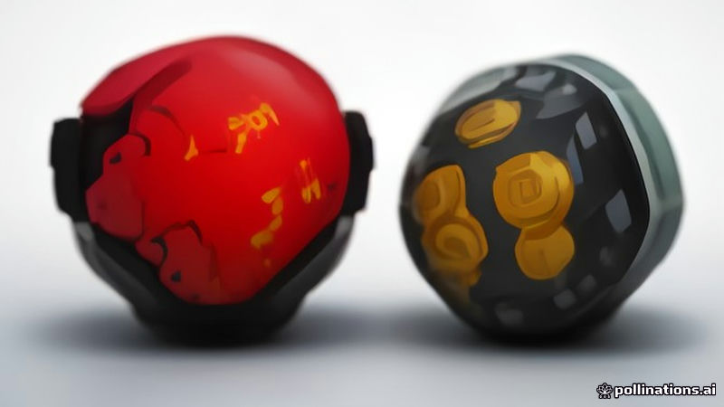

Nvidia বিতর্কে যুক্ত হয়েছে যুক্তরাষ্ট্র-চীন এআই প্রতিযোগিতা
DW · 2026-11-16
AI-generated illustrationNvidia এবং প্রাক্তন সিইও জেনসেন হুয়াংয়ের বিতর্ক যুক্তরাষ্ট্র ও চীনের তীব্র এআই প্রতিযোগিতার দিকে দৃষ্টি আকর্ষণ করেছে।
DW অনুযায়ী, Nvidia এবং তার প্রাক্তন সিইও জেনসেন হুয়াংকে ঘিরে একটি বিতর্ক যুক্তরাষ্ট্র ও চীনের মধ্যে তীব্র কৃত্রিম বুদ্ধিমত্তা প্রতিযোগিতার দিকে দৃষ্টি আকর্ষণ করেছে। এই বিরোধ উন্নত চিপ প্রযুক্তির উপর বিস্তৃত সংগ্রামকে আলোকিত করে, যা দেখায় কীভাবে দুই দেশ এআই ক্ষমতার আধিপত্যের জন্য প্রতিযোগিতা করছে। বিশ্লেষকরা উল্লেখ করেন যে এই ঘটনা অর্ধ-সেমিকন্ডাক্টর দক্ষতার কৌশলগত গুরুত্বকে তুলে ধরে, যেখানে প্রতিটি পক্ষ প্রযুক্তিগত সুবিধা সুরক্ষিত করতে চায়। এই উন্নয়ন বৈশ্বিক এআই দৃশ্যপটের বাড়তে থাকা ভূ-রাজনৈতিক মাত্রাকে প্রকাশ করে।
Read the original reporting at the links above.
English version
Nvidia controversy highlights US-China AI rivalry
According to DW, a controversy involving Nvidia and its former chief executive Jensen Huang has drawn attention to the accelerating artificial‑intelligence competition between the United States and China. The dispute places the broader struggle over advanced chip technology in the spotlight, illustrating how the two powers are locked in a race to dominate AI capabilities. Observers note that the episode reflects the heightened strategic importance of semiconductor expertise as each side seeks to secure a technological edge. The development underscores the growing geopolitical dimension of the global AI landscape.